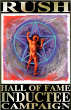

|

|
The Rush Hall of Fame Inductee
Campaign
sponsored by The Rush/NMS Home Page
... believe in the freedom of music ...
... invisible airwaves crackle with life ...
... induct Rush into the Rock and Roll Hall of Fame ...
|
-
A band is eligible for the Rock 'n' Roll Hall of Fame 25 years after the
release of their first album. With Rush having been released in 1974,
this is Rush's first year of eligibility. Bands are nominated by a committee,
who looks at the artists' contributions to music. Since we all know that
Rush is routinely overlooked by critics, we are responsible for
letting the committee know how important Rush has been!
But we have to hurry, we only have until the end of October!
-
We're looking to collect 250,000 letters to the committee explaining why
Rush should be nominated. There are 3 things you can do to help:
- Post a message under the RNR Hall Of Fame's message board. This is the
most important thing to do, since they do archive and review all
the letters. They prefer to have posts under a single thread, so to
post under the thread we have set up called "Rush Deserve A Place In The R&R
Hall of Fame", please follow these suggestions.
Post a concise message, and explain why you feel Rush deserves to be added
to the RNR Hall of Fame. It helps if you mention bands that have cited Rush
as influences, or other ways you feel Rush has influenced music. Please
DO NOT
reply to any posts that bash Rush; they are simply
trying to antagonize Rush fans, and it doesn't help get Rush nominated.
Don't stoop to their childish level. And please make sure you do post under
OUR thread, for ease of archiving.
Now that you've read our suggestions, GO POST! (but make sure to come back :-)
- Make sure to sign up on our guest book. This
is an electronic petition we hope will help Rush's case. There is no guarantee
that the committee will even be able to use this, but sign up anyway! All
we need is your name, email address, and city/state (city/province in Canada,
city/country elsewhere); it takes but a minute. We will NOT publish
email addresses, although we will put up a listing of names and where
people are from for the curious.
- Send off a snail-mail letter! Although this does take more time,
and you do have to spend $0.32 on a stamp (and even more if you're outside
the U.S.), it is very important to do this. Here you can explain in
more detail why you feel Rush deserves to be nominated this year, and again
citing Rush's influence in the music industry will do wonders. And please
avoid negative remarks, we want the committee to realize that Rush fans
are intelligent, and deserve to be heard!
Once you've laboriously typed (yes, PLEASE TYPE the letter, it won't do any
good if they can't read your handwriting!!) up your letter, send it to:
Rock and Roll Hall of Fame Foundation
1290 Avenue of the Americas
New York, NY 10104
|
Thanks to Tom Johnson for our wonderful logo! If you run a Rush page, feel
free to nab the logo and put it on your page with a link back to this page!
Also thanks to Vince Vaughan & Jim Donahue for the quotes! Special kudos
go out to R.G. Terrez for coming up with the name, and starting the thread
on their message board, and to Donna Halper for getting the ball rolling!
|